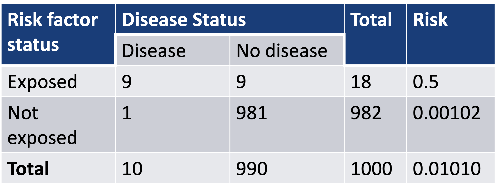
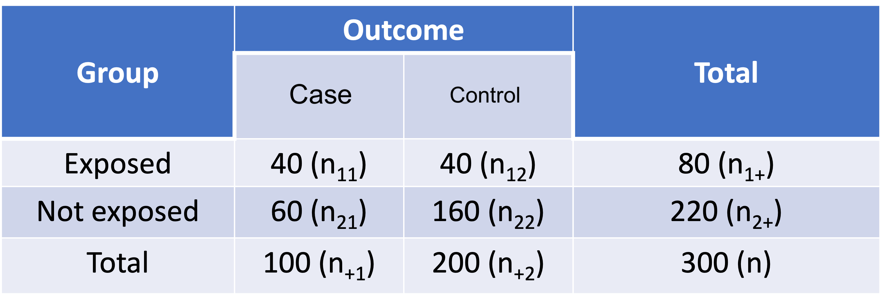
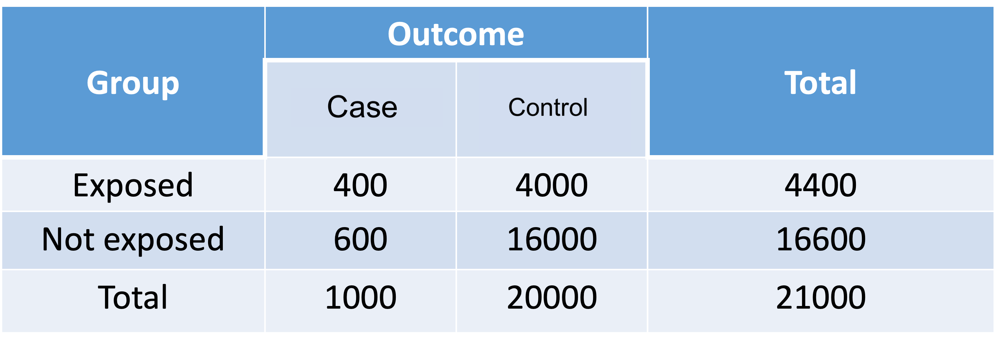
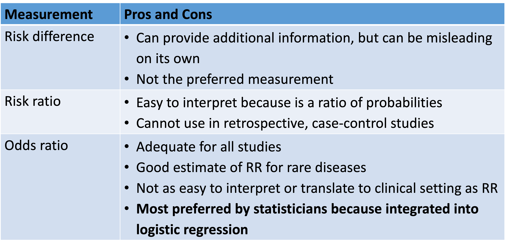
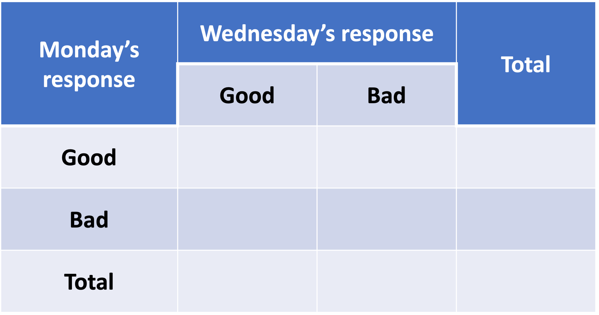
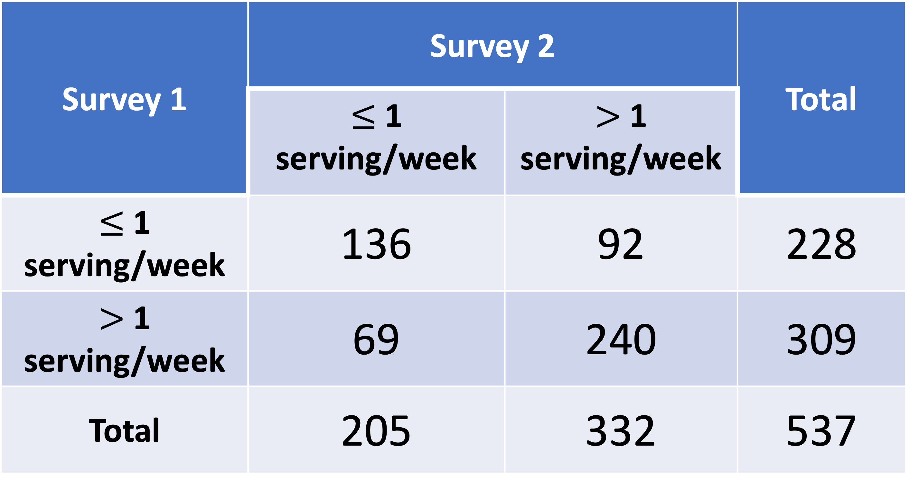

2025-04-07
Used contingency tables to test and measure association between two variables
We looked at risk difference, risk ratio, and odds ratio to measure association
| Measure | Formula for Estimate |
|---|---|
| Risk difference | \(\widehat{RD} = \widehat{p}_1 - \widehat{p}_1 = \dfrac{n_{11}}{n_1} - \dfrac{n_{21}}{n_2}\) |
| Relative risk / risk ratio | \(\widehat{RR}=\dfrac{\widehat{p}_1}{\widehat{p}_2} = \dfrac{n_{11}/n_1}{n_{21}/n_2}\) |
| Odds ratio | \(\widehat{OR}=\frac{\widehat{\text{odds}}_1}{\widehat{\text{odds}}_2}=\frac{{\widehat{p}}_1/(1-{\widehat{p}}_1)}{{\widehat{p}}_2/(1-{\widehat{p}}_2)}\) |
| Glucose tolerance |
Diabetes
|
Total | |
|---|---|---|---|
| No | Yes | ||
| Impaired | 334 | 198 | 532 |
| Normal | 1004 | 128 | 1132 |
| Total | 1338 | 326 | 1664 |
| Measure | Formula | Interpretation |
|---|---|---|
| Risk difference | \(\widehat{RD} = \widehat{p}_1 - \widehat{p}_1\) | The diabetes diagnosis risk difference between impaired and normal glucose tolerance is 0.2591 (95% CI: 0.2141, 0.3041). |
| Relative risk / risk ratio | \(\widehat{RR}=\dfrac{\widehat{p}_1}{\widehat{p}_2} = \dfrac{n_{11}/n_1}{n_{21}/n_2}\) | The estimated risk of diabetes for American Indians with impaired glucose is 3.29 times the with normal glucose tolerance (95% CI: 2.70, 4.01). |
| Odds ratio | \(\widehat{OR}=\frac{\widehat{\text{odds}}_1}{\widehat{\text{odds}}_2}=\frac{{\widehat{p}}_1/(1-{\widehat{p}}_1)}{{\widehat{p}}_2/(1-{\widehat{p}}_2)}\) | The estimated odds of diabetes for American Indians with impaired glucose tolerance is 4.65 times the odds for American Indians with normal glucose tolerance. |
However, when the probability of “success” is small (e.g., rare disease), \(\widehat{OR}\) is a nice approximation of \(\widehat{RR}\) \[\widehat{OR}=\frac{{\widehat{p}}_1/(1-{\widehat{p}}_1)}{{\widehat{p}}_2/(1-{\widehat{p}}_2)}=\widehat{RR}\cdot \frac{1-\widehat{p_2}}{1-\widehat{p_1}}\]
The \(\widehat{OR}\) and \(\widehat{RR}\) are not very close to each other in SHS: diabetes not a rare disease
An example where a disease rare over the whole sample (~1%), but …

\[\widehat{RR}=\frac{0.5}{0.00102}=490 \text{ and } \widehat{OR} = \frac{0.5(1-0.5)}{0.00102(1-0.00102)}=981\]
In retrospective case-control studies: we identify cases (patients with the outcome), then select a number of controls (patients without the outcome)
Case-control study to require much smaller sample size than equivalent cohort studies
So we pick out the cases and controls first, then see if there is exposure
However, the proportion of cases in the sample does not represent the proportion of cases in the population

\[\widehat{RR}=\frac{\widehat{p_1}}{\widehat{p_2}}=\frac{n_{11}/n_{1+}}{n_{21}/n_{2+}}=\frac{40/80}{60/220}=1.8333\]

\[\widehat{RR}=\frac{\widehat{p_1}}{\widehat{p_2}}=\frac{400/4400}{600/16600}=2.5152\]
The OR is valid for
It can be interpreted either as…
While we cannot estimate RR from a case-control study, we can still estimate OR for case-control study
OR does not require us to distinguish between the outcome variable and explanatory variable in the contingency table
For case-control study where the probability of having outcome is small, the \(\widehat{OR}\) is a nice approximation to \(\widehat{RR}\)
For the 1:2 case-control table: \(\widehat{OR}=\frac{40\cdot160}{40\cdot60} = 2.667\)
Population cohort study: \(\widehat{RR}=2.5152\)

Still within the realm of contingency tables
What if we are NOT looking at the association between two variables?
What if we want to look at the agreement between two things?
Cohen’s Kappa statistics: widely used as a measure of agreement

If perfect agreement among the two raters/surveys:
\(p_o\) is the observed proportion of complete agreement (concordance)
\(p_E\) is the expected proportion of complete agreement if the agreement is just due to chance
If the \(p_o\) is much greater than \(p_E\), then the agreement level is high.
Point estimate: \[\widehat{\kappa}=\frac{p_o-p_E}{1-p_E}\]
What’s \(\sum_{i}{a_ib_i}\)?
For \(i\) responses (row/columns), \(a_i\) is proportion of \(i\) response category in first survey and \(b_i\) is proportion of \(i\) response category in second survey (we’ll show this in the example)
\[ SE_{\widehat{\kappa}} = \sqrt{\frac{1}{{n\left(1-p_e\right)}^2}\left\{p_e^2+p_e-\sum_{i}\left[a_ib_i\left(a_i+b_i\right)\right]\right\}}\]
\[\widehat{\kappa} \pm 1.96 \cdot SE_{\widehat{\kappa}}\]
Agreement of surveys
Compute the point estimate and 95% confidence interval for the agreement between our Monday and Wednesday moods.
Needed steps:
Agreement of surveys
Compute the point estimate and 95% confidence interval for the agreement between our Monday and Wednesday moods.
Needed steps:
1/2. Compute the kappa statistic and find confidence interval of kappa
Agreement of surveys
Compute the point estimate and 95% confidence interval for the agreement between our Monday and Wednesday moods.
Needed steps:
The kappa statistic is ____________ (95% CI: _____________, _____________), indicating ______________ agreement.
Since the 95% confidence interval does/does not contain 0, we have/do not have sufficient evidence that there is _________ agreement between our mood on Monday and our mood on Wednesday.
Guidelines for evaluating Kappa (Rosner TB)
If \(\widehat\kappa<0\), suggest agreement less than by chance
Used contingency tables to test and measure association between two variables
We looked at risk difference, risk ratio, and odds ratio to measure association
Such an association is called crude association
But we cannot expand analysis based on contingency tables past 3 variables
A diet questionnaire was mailed to 537 female American nurses on two separate occasions several months apart. The questions asked included the quantities eaten of more than 100 separate food items. The data from the two surveys for the amount of beef consumption are presented in the below table. How can reproducibility of response for the beef-consumption data be quantified?

Agreement of surveys
Compute the point estimate and 95% confidence interval for the agreement between beef consumption surveys. Similar to question: Are results reproducible for the beef-consumption in the survey?
Needed steps:
Agreement of surveys
Compute the point estimate and 95% confidence interval for the agreement between beef consumption surveys. Similar to question: Are results reproducible for the beef-consumption in the survey?
Needed steps:
1/2. Compute the kappa statistic and find confidence interval of kappa
Agreement of surveys
Compute the point estimate and 95% confidence interval for the agreement between beef consumption surveys. Similar to question: Are results reproducible for the beef-consumption in the survey?
Needed steps:
The kappa statistic is 0.378 (95% CI: 0.298, 0.459), indicating fair agreement.
Since the 95% confidence interval does not contain 0, we have sufficient evidence that there is fair agreement between the surveys for beef consumption. The survey is not reliably reproducible since we did not achieve excellent agreement.
Lesson 4: Measurements of Association and Agreement